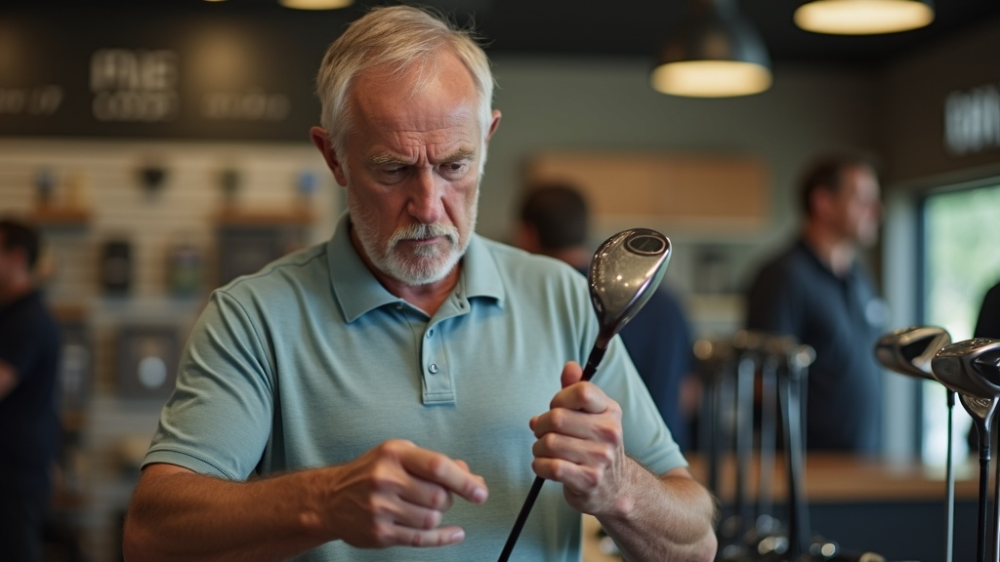
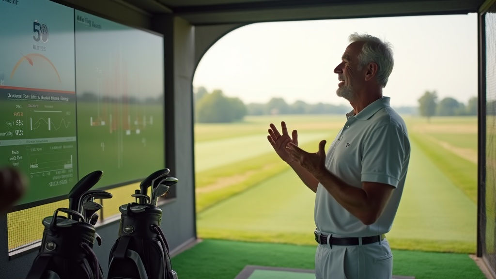

| Product | SF2 Anti-Slice Driver |
| Launch Date | March 23 |
| Pre-Launch Call | March 19 |
| Ads Due | March 20 |
| Batch 1 Ads | 3 scripts → ~14 ad versions |
| Shot / Available | 6 assets |
| In Production | 5 assets |
| Missing / TBD | 3 assets |
| Product | SF2 Anti-Slice Driver |
| Full Name | SliceFix 2 (SF2) Driver |
| Category | Slice-fixing titanium driver |
| Construction | 3-piece forged aerospace-grade titanium |
| Head Size | 445cc (Speed Geometry shape) |
| Predecessor | SF1 (carbon fiber construction) |
Fix your slice AND gain 20-30 yards — without changing your swing.
The slice isn't a swing problem — it's a physics problem. The toe is farther from your hands, has more distance to travel, and naturally lags behind the heel. SF2's answer: don't fight the physics — engineer around it.
| SF1 | SF2 | |
|---|---|---|
| Material | Carbon fiber | 3-piece forged titanium |
| Goal | Fix the slice | Fix slice + max distance |
| Ball Speed | Standard | +3 to 10 mph |
| Distance | Straighter, not longer | +20-30 yards |
| Result | "Proved it works" | "Feature stacking fully realized" |
| Hank Haney | Tiger's coach 6 yrs. 182,000+ lessons. "Fixing slices — that's what I do best." |
| Chris McGinley | 25 yrs major manufacturer. Designed for Tiger & Rory. Now engineering for recreational golfers. |
| SF1 Track Record | 60,000+ golfers. Chronic slicers hitting draws first range session. |
| SR-71 Blackbird | $34M/plane ($290M today). Same aerospace-grade titanium class. |
| Member Price | $249 (one payment) |
| Retail Price | $399 |
| Guarantee | 365-day "Demo Period" — full refund + return shipping |
| Bonus | Swing Speed Secrets (Hank Haney's Speed Slot Sequence) |
| Scarcity | Initial batch: 300 units. $249 → $399 when sold out. |
Equipment and technology make the game easier. You don't need to overhaul your swing. Smarter path, not harder work.
Breakthrough engineering that solves problems Big Golf ignores. Aerospace materials, proprietary mechanisms, founder-led innovation.
SF2 is a pure Thread 1 product. The entire pitch: your equipment should do the work, not your swing.
| Thread 1 Principle | SF2 Execution |
|---|---|
| Equipment over swing changes | "The real solution isn't your swing — it's the equipment you're using." |
| Automation over manipulation | "You don't need manipulation — you need automation. A driver that squares the face FOR YOU." |
| Built for YOUR swing | "Engineering equipment built for YOUR swing, not a Tour pro's." |
| No effort required | 20-30 yards with your current swing, your current swing speed |
The innovation story creates belief. SR-71 origin, 3-piece forged titanium, Chris McGinley's credentials.
| Thread 2 Principle | SF2 Execution |
|---|---|
| Aerospace engineering | SR-71 titanium narrative. "$34M per plane because of this metal." |
| Unconventional R&D | 3-piece forged construction. "Big Golf doesn't forge 3 separate pieces to fix your slice." |
| Credentialed craftsman | Chris McGinley — 25 years, designed for Tiger & Rory, now building for recreational golfers. |
| Proprietary mechanism | SliceFix SpeedTech (6 features, each named & explained). Not "proprietary technology." |
| # | Insight |
|---|---|
| 1 | Slice = #1 pain. 96% want to eliminate it. Only 8% hit a draw. |
| 2 | Tried everything, failed. Lessons, YouTube, swing overhauls — resignation + frustration. |
| 3 | Distance is second desire. Fix slice first, then distance. SF2 answers both. |
| 4 | Equipment solutions = low trust. "Draw-biased" = gimmick. Proof burden is high. |
| 5 | SF1→SF2 upgrade = emotional. SF1 owners love slice fix, feel "left behind" on distance. |
| 6 | "Without changing your swing" = most powerful qualifier. Removes effort barrier. |
| 7 | Big Golf = villain. $500+ for Tour pro drivers. "Built for YOUR swing" = tribal alignment. |
| 8 | SR-71 titanium passes believability. Tangible, verifiable origin story. |
| Authority | Hank Haney (Tiger's coach, 182K+ lessons) |
| Engineering | Chris McGinley (25 yrs, Tiger/Rory) |
| Social Proof | 60,000+ SF1 golfers |
| Origin Proof | SR-71 narrative ($34M/plane) |
| Risk Reversal | 365-day demo period |
| Beat | Content |
|---|---|
| 1. Hook | SR-71 intrigue — "a spy plane and your driver?" |
| 2. Problem | Toe lag physics → your driver was designed for Tour pros |
| 3. Origin | Hank + McGinley partnership — "one mission: fix toe lag" |
| 4. SF1 Proof | 60K+ golfers, it worked → BUT distance complaint |
| 5. SF2 Reveal | Titanium solves both → 6 features walkthrough |
| 6. Social | Testimonials — regular guys, 20+ yards, no swing changes |
| 7. Close | Price anchor → $249 → 365-day guarantee |
| Phrase | Why It's Locked |
|---|---|
| "Toe lag" | Named root cause — gives the problem a label |
| "Automation, not manipulation" | Core Thread 1 differentiator |
| "Six features working together" | Differentiates from Big Golf's single-feature approach |
| "SliceFix SpeedTech" | Proprietary mechanism name (not "SliceFix Technology") |
| "3-piece forged titanium" | Always "3-piece forged" — not just "titanium" |
| "20-30 yards without changing your swing" | Distance + qualifier always paired |
| "Built for YOUR swing" | Anti-Big Golf positioning |
| "Distance AND accuracy" | The AND is the innovation |
| Page | Status |
|---|---|
| Landing Page (VSL Delay) | TBD |
| Landing Page (VSL Expanded) | TBD |
| Sales Page (PDP) | TBD |
| Checkout 1 & 2 | TBD |
| Upsell 1 & 2 / Downsell 1 & 2 | TBD |


| # | Driver | SF2 Fulfillment |
|---|---|---|
| V1 | Pain Relief | 6 features square the face without swing changes |
| V2 | Outcome | Distance AND accuracy — not a tradeoff |
| V3 | Social Proof | 60K+ golfers, "most popular driver of the year" |
| V4 | Innovation | 3-piece forged titanium, SliceFix SpeedTech |
| V5 | Convenience | "Without changing your swing" |
| V6 | Identity | "Freedom to play REAL, slice-free golf" |
| V7 | Deal / Value | $249 member price, 365-day guarantee |
| V8 | Gift-Worthiness | Phase 2 — seasonal campaigns |
| V9 | Contrarian | "Built for YOUR swing, not a Tour pro's" |
| V10 | Confidence | "Relaxed and confident from the tee box" |
| V1 | V2 | V3 | V4 | V5 | V6 | V9 | V10 | |
|---|---|---|---|---|---|---|---|---|
| P1 Slicer | 0001, 0002 | 0001 | 0001, 0002 | |||||
| P2 Skeptic | 0002 | 0002 | ||||||
| P3 Tech | 0003 | |||||||
| P4 Warrior | 0002 | 0002 | GAP | GAP | ||||
| P5 Comeback | GAP | GAP | 0002 | GAP | 0002 | GAP |
| Persona | Why Deferred |
|---|---|
| Peer-Influenced | Social proof baked into sf2-0002 — not a distinct lane |
| Smart Shopper | Overlaps Skeptic + Tech. Mechanism detail in body serves this. |
| Gift Buyer | Seasonal — Father's Day, Christmas. Not cold traffic launch. |
| Competitive Amateur | Mid-handicappers don't self-ID as slicers in cold traffic. |
| Format | bvo (Human VO + B-Roll) — ~5 min long-form |
| Lead Thread | Thread 2 (Innovation) → Thread 1 payoff |
| Status | v2 LOCKED |
| Var | Persona | Value Driver |
|---|---|---|
| V1 | General / Tech | V4 Innovation |
| V2 | Chronic Slicer | V1 Pain + V5 Convenience |
| V3 | Peer-Influenced | V3 Social Proof |
| V4 | SF1 Upgraders | V4 Innovation (visual) |
| V5 | OPEN — Phase 2 | — |
| Format | bvo — ~120s per variation. 5 hooks → 1 body. |
| Lead Thread | Thread 1 (Smarter Journey) |
| Status | v4 LOCKED |
| Strategy | Andromeda optimization — Meta matches hook to viewer |
| Hook | Persona | VO | Entry Point |
|---|---|---|---|
| H1 | Chronic Slicer | On-cam | "If your slice has survived every fix..." |
| H2 | Equipment Skeptic | On-cam | "I used to roll my eyes at every 'miracle driver' ad" |
| H3 | Weekend Warrior | AIVO | "You used to love Saturday morning golf" |
| H4 | Comeback Golfer | AIVO | "There's a golfer somewhere inside you..." |
| H5 | Smart Shopper | Visual | "6 features. 60,000 golfers. Zero swing changes." |
| Format | bvo (Brand commercial) — ~1:30-2:00 |
| Lead Thread | Thread 2 (Innovation) → Thread 1 close |
| Status | v3 Body LOCKED / Hooks DRAFT |
| Hook | Persona | Tone | Entry Point |
|---|---|---|---|
| H1 | Tech Enthusiast | Branded | "He's built clubs for the biggest names in golf" |
| H2 | Competitive Amateur | DR | "You don't need to fix your swing" |
| H3 | Chronic Slicer | Branded | "Good golf always starts with good drives" |
| H4 | Smart Shopper | DR | "Every major driver company engineers for the Tour" |
| H5 | Peer-Influenced | DR | "When 60,000 golfers put down their big-brand drivers..." |
Body arc (9 beats): Origin → Philosophy (Balance, Reliability, Speed) → Aerospace → McGinley → Engineering Rigor → Product Hero → Identity Shift → Proof Tease → CTA
| Persona | 0001 | 0002 | 0003 | Coverage |
|---|---|---|---|---|
| P1 Chronic Slicer | V2 hook + body | H1 | H3 | Strong |
| P2 Equipment Skeptic | Body (proof) | H2 | — | Moderate |
| P3 Tech Enthusiast | V1 hook | — | H1 + body | Strong |
| P4 Weekend Warrior | — | H3 | — | Light — P2 priority |
| P5 Comeback Golfer | — | H4 | — | Light — P2 priority |
Email sequences, post-purchase flows, and abandoned cart messaging must echo the same core language as ads and VSL. Every touchpoint should feel like the same conversation.
| Phrase | Use in Email |
|---|---|
| "Toe lag" | Problem emails — name the root cause |
| "Automation, not manipulation" | Differentiation emails |
| "Six features working together" | Mechanism emails |
| "SliceFix SpeedTech" | Always — not "SliceFix Technology" |
| "3-piece forged titanium" | Always "3-piece forged" |
| "20-30 yards without changing your swing" | Distance claim — always paired |
| Sequence | Messaging Direction | Status |
|---|---|---|
| Pre-launch / Waitlist | Root angle + SF1→SF2 upgrade story | TBD |
| Launch Announcement | Mirror VSL emotional arc | TBD |
| Cart Abandonment | Thread 1 + proof stack + guarantee | TBD |
| Post-Purchase | Unboxing tips, Swing Speed Secrets access | TBD |
| SF1 → SF2 Upgrade | "You loved the slice fix. Now get the distance." | TBD |
| Testimonial Drip | Match ad proof structure | TBD |
| Sync | When | Who |
|---|---|---|
| Email copy review vs ad scripts | Before March 20 | Creative + Email |
| Landing page → email handoff test | Before launch | Email + Dev |
| Post-purchase flow activation | March 23 | Email + Ops |
| SF1 upgrade segment targeting | Before launch | Email + Data |
| Category | Count | Items | Themes |
|---|---|---|---|
| Shot / Available | 6 | McGinley lab footage, demo day footage, Brixton’s dad full-round, Roger testimonials, lifestyle shoot (3/7), unboxing (Gerry) | Thread 1 Thread 2 |
| In Production | 5 | JoJo POV pickups (all week), Shoot 3 testimonials (Fri), Jessi animations (Mar 13), Jessi testimonial vids (Mar 13), Brixton range session (Mar 10-14) | Thread 1 Thread 2 |
| Missing / TBD | 3 | Slowmo closeup hits (equipment-dependent), SF2 feature carousel (static — Mar 18), email hero images/GIFs (Mar 18) | Thread 2 |
| Owner | JoJo Phillips |
| Talent | Gerry |
| When | Mon-Tue, March 10-11 |
| Owner | JoJo Phillips (self-capture) |
| When | All week, March 10-14 |
| Equipment | Meta glasses, iPhone, cameras |
| Owner | JoJo Phillips |
| Talent | 3 golfers (TBD) |
| When | Friday, March 14 |
| Style | Man-on-the-street. NO scripted lines, zero coaching. |
Close-ups of facial reactions on hit + wide shot full swing + ball flight. Before/after: their driver vs SF2.
| Asset | Source | ETA | Status |
|---|---|---|---|
| Animations | Jessi | Mar 13 | Arriving |
| Lifestyle shoot | Mar 7 shoot | Mar 9-10 | Ingesting |
| Testimonial videos | Jessi | Mar 13 | Arriving |
| Demo day footage | Existing | In Iconik | Available |
| McGinley lab footage | Existing | In Iconik | Available |
| Brixton's dad footage | JoJo folder | Available | Needs review |
| Script | Primary Source |
|---|---|
| sf2-0001 | Shoot 2 (pickups) + Shoot 3 (testimonials) + McGinley |
| sf2-0002 | Shoot 3 (testimonials) + Shoot 2 (range POV) + lifestyle |
| sf2-0003 | Shoot 2 (slowmo + product) + McGinley + lifestyle |
| Deliverable | Owner | Type | Theme / Concept | ETA | Where to Find | Status |
|---|---|---|---|---|---|---|
| Brixton range session (SF2) | JoJo | Organic | CEO authenticity — Thread 1 | Mar 10-14 | JoJo shared folder | Shooting |
| Brixton’s dad full round | JoJo | Organic | Real golfer — Thread 1 | Available | JoJo shared folder | Available |
| McGinley lab walkthrough | JoJo | Social | Innovation story — Thread 2 | Available | Iconik | Available |
| Man-on-range UGC clips | JoJo / Fatima | Organic | Social proof — Thread 1 | Mar 14 | Shoot 3 folder | Planned |
| Product unboxing reel | JoJo | Social | Anticipation / reveal — Thread 2 | Mar 11 | Shoot 1 folder | Shooting |
| SF2 feature carousel (static) | Fatima / Jesse | Social | 6 features — Thread 2 | Mar 18 | Canva / Drive | TBD |
| Customer testimonial clips | Jessi | Organic | Real results — Thread 1 | Mar 13 | Jessi delivery | Arriving |
| Email hero images / GIFs | Jesse | Match ad key language | Mar 18 | Drive / Canva | TBD | |
| Influencer SF2 reactions | JoJo | Organic | Authority + authenticity | Post-launch | TBD | Phase 2 |
| Ad | Hooks | Lead Thread |
|---|---|---|
| sf2-0001 | 4 locked + 1 open | Thread 2 → 1 |
| sf2-0002 | 5 hooks (Andromeda) | Thread 1 |
| sf2-0003 | 5 hooks (DRAFT) | Thread 2 → 1 |
~14 unique ad versions entering the auction
| Platform | Meta (Facebook + Instagram) |
| Format | Video (bvo) |
| Audience | Cold traffic (primary) + SF1 retargeting |
| Targeting | Broad + Andromeda (0002), Interest-based (0001, 0003) |
| Geographic | US (primary) |
| Parameter | Value |
|---|---|
| Daily budget (launch week) | $___/day |
| Target CPA | $___ |
| Launch week total | $___ |
| Scale trigger | CPA < $___ for 3 days |
| Kill trigger | CPA > $___ for 5 days |
| Day | Check | Action |
|---|---|---|
| Day 1 | All ads live, tracking firing | Fix broken tracking immediately |
| Day 2-3 | Initial CPA + CTR by hook | Flag outliers |
| Day 4-5 | Winning hooks identified | Shift budget to winners |
| Day 7 | Week 1 review | Scale/pause/queue Phase 2 |
Cadence: Week 1 data → Copy team tickets Monday → Hooks delivered Friday → Launched weekend
| # | Persona | Gap | Hook Direction |
|---|---|---|---|
| 1 | Weekend Warrior | Single hook only | Convenience + enjoyment angles |
| 2 | Comeback Golfer | Single hook only | Identity recovery + nostalgia |
| 3 | Chronic Slicer | Well-covered but highest vol | New pain entry points |
| 4 | Equipment Skeptic | Moderate coverage | Deeper proof hooks |
| Direction | Trigger |
|---|---|
| Winning hook → full script | Hook outperforms parent body |
| Weekend Warrior dedicated | H3 strong CTR, weak conversion |
| Comeback Golfer dedicated | H4 strong CTR, weak conversion |
| SF1 → SF2 upgrade | SF1 retargeting CPA is strong |
| Competitive Amateur | sf2-0003 H2 shows signal |
| Signal | Action |
|---|---|
| High CTR, low conversion | Hook works, body doesn't — test body variations |
| Low CTR, high conversion | Body converts, hook doesn't stop scroll — hook stack |
| One hook dominates | Scale budget + build hook stack around its angle |
| AIVO outperforms on-cam | Lean into AIVO for batch 2 |
| On-cam outperforms AIVO | Double down Christopher on-camera |
| Trigger | Phase 1 winning angles identified |
| Owner | JoJo Phillips |
| Format | UGC-style authentic reactions |
| Layer | Measured | Owner |
|---|---|---|
| Landing Page (VSL Delay) | Play rate, watch time, scroll depth, bounce | CRO + Creative |
| Landing Page (VSL Expanded) | Same + section-level engagement | CRO + Creative |
| Sales Page (PDP) | Time on page, ATC rate, exit points | CRO |
| Checkout Flow | Cart abandonment, checkout completion, upsell take | CRO + Dev |
| Upsell/Downsell | Take rates per step, revenue per visitor | CRO |
| Signal | Page Action |
|---|---|
| Winning hook = convenience (T1) | Test convenience-led headline on LP |
| Winning hook = innovation (T2) | Test SR-71/titanium above-fold |
| High ad CTR, low page conversion | Messaging disconnect — align page to ad promise |
| One persona drives most conversions | Test persona-specific landing page |
| SF1 retargeting outperforms | Test SF1→SF2 upgrade landing page |
| # | Test | Hypothesis |
|---|---|---|
| 1 | Above-fold headline | Match winning ad angle → higher conversion |
| 2 | VSL thumbnail / play button | Higher play rate → more viewers reach offer |
| 3 | Price presentation | $249 anchor vs $399 — test emphasis/layout |
| 4 | Social proof placement | 60K stat above fold vs below VSL |
| 5 | Checkout flow length | 1-step vs 2-step — friction vs commitment |
| 6 | Upsell copy alignment | Match upsell to ad persona that drove click |
| Touchpoint | When | What CRO Needs |
|---|---|---|
| Baseline metrics | Launch week | Page URLs, traffic volume, SF1 benchmarks |
| Initial data review | Day 7-14 | Which ads driving traffic, persona breakdown |
| Test plan alignment | Start of Phase 3 | Winning angles, persona data, creative direction |
| Results feedback loop | Ongoing | Page test results inform batch 2 ad messaging |